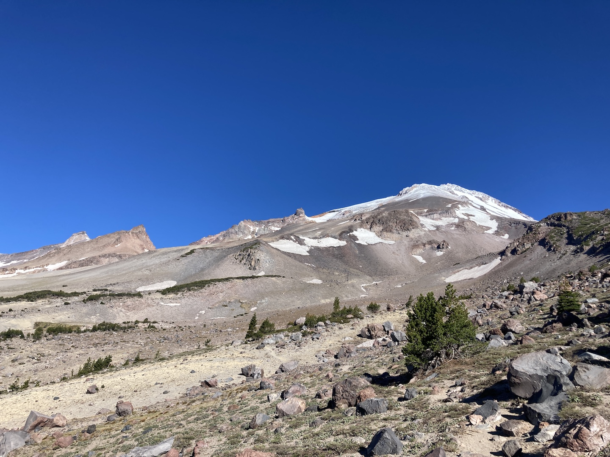
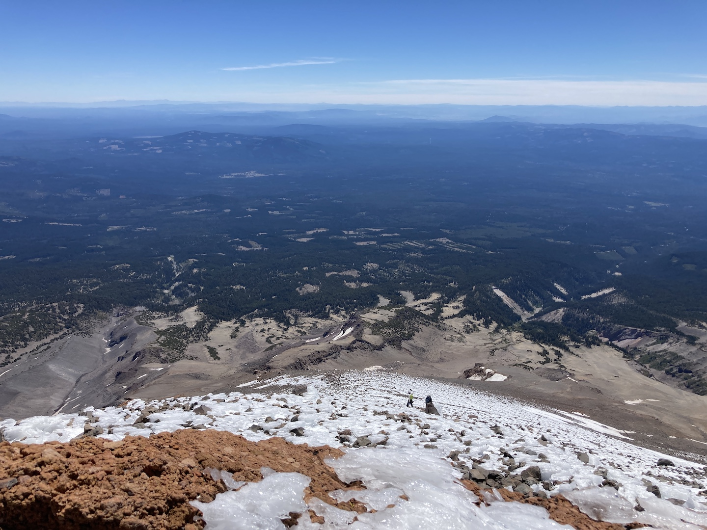

Mount Shasta trip report from 16 June 2021.
Mt. Shasta has been on my radar for some time now. My family has been visiting Trinity Alps Resort, located in the Shasta-Trinity National Forest, since I was 5 years old. With my new interest in basic mountaineering (see my Mt. Hood trip and summit of Quandary Peak), Shasta was a perfect candidate for my next climb: a mere two hours away from our lodging, a fairly non-technical scramble, an iconic mountain.
Trail reports claimed that Avalanche Gulch, the most possible route up Shasta, was too dangerous due to minimal snowfall that season. This led me to look at other routes, ending up with Clear Creek Route, arguably the easiest route to the summit. A 14-mile round trip with over 7,500 ft elevation gain, it's still no walk in the park. The scree towards the top makes for despair, the sun exposure makes for heat, and the steep descent makes for angry knees.
Sadly, this trip was solo. Two members of my Hood group ended up bailing last-minute, while another cousin on the trip had work obligations.
I slept at the quaint McCloud Timber Inn, which ended up being an excellent experience. $70 got me two queen beds, a full kitchen, a nice living room, and a 30-minute drive to the trailhead. Highly recommend staying here!
Because the road to the trailhead has multiple sandbars, ruts, and all-around rough conditions, it's essentially required for vehicles to be 4WD. Alas, the rental car my family got—a Nissan Altima—was not 4WD, leading me to scope out a parking space further down the mountain. I finally found one at the last intersection before the rough spot (41.3631564, -122.0878371) and headed back to the inn, picking up trail snacks along the way: two packets of trail mix, one packet of roasted peanuts, 10 oz of beef jerky, and two Snickers bars.
In preparing my gear for the morning, I realized I had forgotten my headlamp, the single item that would allow me to get an early start and beat the heat. I chastised myself for not doing a more thorough check and hesitantly changed my alarm clock to a 5:00am wake-up time.
I was up at 5:00am, downed a peanut butter sandwich and banana, filled my CamelBak bladder, then got on the road, arriving at 5:55am.
Starting at 6:00am sharp, the hike from my pseudo trailhead to the actual trailhead was fairly nice, albeit more climbing than I would have liked. The sun was just above the horizon and warmed my back through the trees—a morning golden hour. I reached the main trailhead at 7:00am, filled out the wilderness permit and summit pass, answered the call of nature, then got on the trail beginning at 7:15am. By this time the sun was well above the horizon, beating down on me as I exited the trees and made my way towards the beast looming in the distance.
In an effort to conserve the measly 2 L of water I brought, I only a few small sips after eating. My first snack was one of the Snickers bars, providing a noticeable energy boost only a few minutes later. I reached a relatively flat clearing and was met with tens of tents, likely all climbers who had come up the night before or morning of in hopes of summiting that morning or the following. I continued past and got a lovely introduction to the infamous scree.
While it wasn't as bad as some people claimed, the scree's ability to turn a full-step to a half-step was real. Even what seemed like a solid foot plant could lead to a six-inch downward slide, but with the same amount of energy used! I found great stability in both scree and otherwise from my Black Diamond Distance Z poles, using them to supplement my feet and take load off the legs.
My first major break took place around what I'd guess is 11,000 ft, 2:00 hr into the climb. I took my time to sit down, eat some jerky, and truly appreciate the view. Mt. Shasta is quite prominent at 9,772 ft, making for expansive views of the surrounding landscape at any appreciable elevation. Something I'm interested in—I'm unaware if there's a noun for this—is the longevity/progress of places and how it looks now vs. time X (in the past). It's reasonable to think that the natives who occupied California for so long and climbed this mountain had the same view as I did up there, sans a few man-made structures. For how much longer will this be the case? A hundred years? A thousand years? This is one benefit of the digital age: the picture below will likely be able to be compared to another one in a hundred years, and hopefully long after that.
The break was short-lived, as I needed to get a move on before it got too hot and too late. I donned my helmet after feeling a major headache (which I've felt before and attribute to direct sunlight on the noggin) and continued up the endless scree-ridden switchbacks. In looking over every so often, the grade the switchbacks were weaving in and out of seemed to be a consistent 45°, or 100% slope, and it sure felt like it. At this point I could feel the elevation takes its toll on me. My current city's elevation is 430 ft, and the cabin we had been staying at for the past three days was around 2000 ft. According to Hypoxico's Altitude to Oxygen Chart, my body was roughly used to between 19.4-20.5% (assuming some degree of acclimation) O2 during normal times, but was experiencing 16% O2 at the beginning of the climb and somewhere in the high 12%s at the end... a 20-35% decrease in O2!
As I continued up, the scree began to mix with the recently-deposited snow (now turned to icy-sleet) from Monday night, a situation I did not plan for as shown by my lack of crampons, hiking boots, and ice axe. I step-kicked my way through most of the ice, only slipping a handful of times. While the grade felt and looked steeper and ice did not help stability, I was able to make it to the main landmark of the climb, UFO (or Mushroom) Rock, at 12:00pm. I stopped here for 15 minutes and made a gruesome discovery: I only had about 0.6 L of water left. Some quick mental math made me decide today wasn't my day to summit. I had been averaging around 1,000 ft elevation gain per hour, and still had around 1,500 ft to go. This would take on an extra 2:00 hr for the ascent (accounting for fatigue), 0:30 hr for a summit break and celebration, and 1:00 hr for the descent back to UFO Rock, for a grand total of 3:30 hr. Given I had used 1.4 L over the past five hours, I would undoubtedly be out of water by the time I got back to UFO Rock, and with the mountain heating up and no shade from the sun, it was a risk I wasn't wanting to take. I took one last look at false summit and began the long descent down.
And a long descent it was.
The poles only took so much load off the knees, making ever step of the steep trail send what felt like seismic shockwaves through my legs. The sun had been in full view for hours now, cooking both the mountain and me. The scree offered help this time in the form of "surfing" and plunge steps, in which I slid down without any extra impact on my knees or energy expended. I continued in this fashion as long as possible before getting back to the flat clearing with all the tents. From here it was a race back to the car for two reasons: I was tired of being on my feet and wanted to make it back to the cabin in time for the taco bar dinner that was on the menu. A mix of running and fast-walking put me back at the main trailhead around 3:30pm, but I still had to make it back to my self-proclaimed trailhead, some three miles down the road. I scanned the parking lot for innocent hikers I could accost for a ride back down, but saw nobody. I continued on. About 10 minutes down the road, I heard the rumble of a vehicle and turned around to see my would-be savior coming down in his truck. I waved him down, explained my situation, got a "get in!", and rode in the bed back down to my untowed car.
The drive back on Forest Route 42N17 to the cabin was equally as scenic and breathtaking as it was there. The late afternoon sunlight shone across rolling hills in the distance and warmed my arms and chest as the cool wind rushed in from the open windows. Trees lined the curvy road's sides, followed by steep rock faces that had evidently recently dropped rocks. Pictures will not do it justice, which is why I won't post one here. This is a must-drive route, and I plan to return on my bike in the future.
With gear in general, I tend to run pretty lean/minimalist. I would prefer to be uncomfortable than have to get something that is not absolutely necessary. After all, if Muir could summit all the peaks he did without the help of down jackets and three pairs of specialized gloves, why can’t I? (This does not apply to safety-related items, which I am happy to spend money on, as it decreases risk for both myself and a team as a whole, if applicable.)
On the other hand, comfort is often related to safety in the mountains. Warmth = not cold = no hypothermia. Extra clothes = non-wet clothes = no hypothermia. And so on. There is a balance to be struck between non-essential comfort, safety, and personal philosophy (read: stubbornness?).
My father's old-school Oakely M Frame sunglasses served me well throughout the entirety. Sunscreen ensured my skin wasn't scorched. Poles were a godsend that I'm glad I brought.
A larger bladder is needed. 4 L would have been plenty to get me to the top and back down without running dry (assuming non-excessive use). Mountaineering boots would have been a good, albeit heavier, choice, especially for the snowier parts. The trail up to UFO Rock is doable in running shoes. Crampons weren't needed, nor was an ice axe.
This goes without saying, but physical prep is incredibly important, especially sport-specific work, the prime (gym-based) example being step-ups with boots and a loaded pack. (Of course, hiking up an actual hill with identical terrain to the target mountain is preferable, but when you live in Texas, you gotta make do with what you got.)
I did not prepare for this trip nearly as much as a) I could have, b) I should have, or c) did for Hood. I attribute this to laziness and naivety. All of my related training consisted of fixed gear cycling and some weighted leg work, but not much due to a knee injury I'm still battling.
Step-ups and a StairMaster are all anyone really needs for this. Toss some weight on and get stepping. Mountain Tactical’s Peak Bagger program is a seemingly solid resource for its stated goal of “build[ing] strength and stamina into your legs required for a hard, fast push to a peak in a single day or two”.